习近平总书记指出，“世界上既不存在定于一尊的现代化模式，也不存在放之四海而皆准的现代化标准”“我们所推进的现代化，既有各国现代化的共同特征，更有基于国情的中国特色”。习近平总书记的下列重要论述与此蕴含的哲理不同的是( )。
A.“鞋子合不合脚，只有穿的人才知道。中国特色社会主义制度好不好、优越不优越，中国人民最清楚，也最有发言权。”
B.“我们千万不能邯郸学步，失其故行’。我们就是把马克思主义中国化，就是搞中国特色社会主义。”
C.“构建新发展格局是一个系统工程，既要操其要于上’，加强战略谋划和顶层设计，也要分其详于下’，把握工作着力点。”
D.“橘生淮南则为橘，生于淮北则为枳’。我们需要借鉴国外政治文明有益成果，但绝不能放弃中国政治制度的根本。”
“十五五”时期我国发展环境面临深刻复杂变化，我国发展处于战略机遇和风险挑战并存、不确定难预料因素增多的时期。关于“十五五”时期我国经济发展环境以及战略机遇的表述不准确的是（）。
A.经济基础稳固、优势多、韧性强、潜能大
B.长期向好的支撑条件和基本趋势没有变
C.中国特色社会主义制度优势、超大规模市场优势、完整产业体系优势、丰富人才资源优势更加彰显
D.我国发展处于战略机遇和风险挑战并存、不确定难预料因素增多的时期，其中最大的不确定性就是内部的风险挑战
把政治建设纳入党的建设总体布局并摆在首位，是新时代我们党对马克思主义党建理论的重大创新。下列相关说法正确的有（）。
①党的政治建设是党的基础性建设
②政治立场是党生存发展第一位的问题
③旗帜鲜明讲政治是党的政治建设的首要任务
④营造良好政治生态是党的政治建设的基础性、经常性工作
A.1 项 B.2 项 C.3 项 D.4 项
无农不稳，无粮则乱。习近平总书记指出，农业强，首要是粮食和重要农产品供给保障能力必须强，下列举措属于提升粮食产能的有（）。
①切实把种业振兴行动抓出成效，加快生物育种产业化步伐
②完善农资保供稳价应对机制，稳定农民预期、降低生产风险
③逐步把永久基本农田全部建成高标准农田，确保建一块成一块
④制止“舌尖上的浪费”，深入开展“光盘行动”，提倡健康饮食
⑤坚决守住18亿亩耕地红线，坚决遏制“非农化”，有效终止“非粮化”
A.2 项 B.3 项 C.4 项 D.5 项
习近平指出，谋划“十五五”时期经济社会发展，要统筹谋划，抓住关键性、决定性因素，把握好节奏和进度，注重巩固拓展优势、突破瓶颈堵点、补强短板弱项、提高质量效益，与整体目标保持取向一致性。这体现了（）哲学道理
①要抓住主要矛盾，集中力量解决关键问题
②世界是普遍联系的，要坚持系统观念
③要把握好量变的节奏，保持适度原则，维持事物质的稳定
④部分决定整体，要通过优化部分的状态，实现整体功能的最大化
A.1 项 B.2 项 C.3 项 D.4 项
2026年8月1日出版《求是》杂志发表习近平的重要文章《加快建设健康中国》。文章指出，2016年中央明确提出新时代卫生与健康工作方针，即（），中西医并重，把健康融入所有政策，人民共建共享。
A.以基层为重点，以改革创新为动力，预防为主
B.以基层为重点，以改革创新为动力，治疗为主
C.以社区为重点，以改革创新为动力，预防为主
D.以社区为重点，以改革创新为动力，治疗为主
建设自贸试验区是以习近平同志为核心的党中央在新时代推进改革开放的重要战略举措。十年来，国家层面共向全国复制推广三百多项制度创新成果，形成了改革红利共享、开放成果普惠的良好局面。从哲学上看，建设自贸试验区（）。
A.表明矛盾的特殊性决定事物的不同性质
B.说明在一定条件下共性和个性可以相互转化
C.体现了普遍性寓于特殊性之中的基本原理
D.遵循了“共性——个性——共性”的认识发展规律
国务院机构改革优化了创新引擎。一方面，重组科学技术部，加强、优化、转变政府科技管理和服务职能；另一方面，重组国家知识产权局，强化知识产权创造、保护和运用，让“第一动力”更有劲头。这段话蕴含的哲理是（）。
A.社会存在决定社会意识的产生和发展
B.上层建筑对经济基础具有反作用，应当与经济基础的发展相适应
C.生产关系适合生产力的发展要求，才会对生产力的发展产生积极的推动作用
D.生产工具是生产力中的主导因素，是生产力发展水平的主要标志
加强人民当家作主制度保障，要坚持和完善我国根本政治制度、基本政治制度。下列有关我国政治制度，说法正确的有（）。
①坚持民族区域自治制度是党的民族工作的主线
②基层群众自治制度是社会主义民主政治建设的基础
③中国人民政治协商会议的职能是政治协商、民主监督、执政议政
④人民代表大会制度是我国的政体，也是我国的根本政治制度
A.1 项 B.2 项 C.3 项 D.4 项
习近平在二十大报告中提出，中国式现代化是中国共产党领导的社会主义现代化，既有各国现代化的共同特征，更有基于自己国情的中国特色。下列关于“中国式现代化”，说法正确的的是（）。
A.中国式现代化是全体人民同步富裕的现代化
B.中国式现代化更加强调物质文明
C.坚持深化改革开放是推进中国式现代化要牢牢把握的重大原则
D.坚持高质量发展直接关系中国式现代化的根本方向、前途命运、最终成败
下列措施有利于扩大内需的是（）。
①完善粮食生产收储加工体系
②加大出口信贷和出口信保支持
③合理扩大地方政府专项债券投向领域
④实施数字消费、绿色消费、健康消费促进政策
A.①② B.②③ C.①④ D.③④
习近平总书记关于卫生健康工作的重要论述，是做好卫生健康工作的根本遵循。关于习近平总书记对健康中国建设的重要论述，下列说法正确的有（）。
①建设体育强国、健康中国，最根本的是增强人民体质、保障人民健康
②治疗是最经济最有效的健康策略，要坚决贯彻治疗为主的卫生与健康工作方针
③无论社会发展到什么程度，我们都要毫不动摇把公益性写在医疗卫生事业的旗帜上
④在实现“两个一百年”奋斗目标的历史进程中，发展卫生健康事业始终处于基础性地位，同国家整体战略紧密衔接，发挥着重要支撑作用
⑤爱国卫生运动是我们党把群众路线运用于卫生防病工作的成功实践
A.2 项 B.3 项 C.4 项 D.5 项
习近平总书记在谈及生态文明建设时指出：“我们既要绿水青山，也要金山银山。宁要绿水青山，不要金山银山，而且绿水青山就是金山银山。”关于生态文明建设，下列理解正确的是（）。
①人与自然的关系是人类社会最基本的关系
②良好的生态环境是最公平的公共产品，是最普惠的民生福祉
③生态环境问题归根结底是气候变化问题
④绿水青山中蕴含着经济价值
A.①②④ B.②③④ C.①②③ D.①③④
下列关于中国特色社会主义法治道路的说法错误的是（）。
A.中国社会主义法治之魂是依规治党
B.党的领导是我国法治与西方资本主义法治最大的区别
C.中国特色社会主义法治道路是建设社会主义法治国家的唯一正确道路
D.坚持依法治国首先要坚持依宪治国、坚持依法执政首先要坚持依宪执政
党的十八大以来，以习近平同志为核心的党中央高度重视海洋工作和海洋事业发展，将海洋强国建设作为实现中华民族伟大复兴的重大战略任务，通盘谋划、整体推进海洋强国建设。关于建设海洋强国，下列表述不准确的是（）。
A.统筹处理人与自然的关系、发展和保护的关系是推进海洋强国建设的重大原则
B.建设海洋强国必须进一步关心海洋、认识海洋、经略海洋，加快海洋科技创新步伐
C.建设强大的现代化海军是建设世界一流军队的重要标志，是建设海洋强国的战略支撑
D.建设海洋强国所需的关键技术主要靠对外开放引进，靠充分发挥国外关键技术经验优势
2026 年7月1日，庆祝中国共产党成立105周年大会在北京举行。习近平强调，坚定信心、接续奋斗，必须（）。
①坚持党的基本理论、基本路线、基本方略
②紧紧依靠基层干部创造历史伟业
③积极应对前进道路上的风险挑战
④持续推动构建人类命运共同体
⑤持之以恒推进全面从严治党
A.①③④⑤ B.②③④⑤ C.①②③④ D.①②③④⑤
国家主席习近平在上海世界会客厅出席2026世界人工智能大会暨人工智能全球治理高级别会议开幕式并发表主旨讲话。下列符合讲话精神的有（）。
①鼓励开源开放、合作共享，全面促进人工智能科技创新、产业发展、场景应用
②协同推进传统产业改造升级、新兴产业培育壮大、未来产业前瞻布局
③强化风险意识，确保人工智能始终处于人类控制之下
④人工智能发展不仅是某个国家的独奏，而且是全球合作的交响
A.①②③ B.②③④ C.①②④ D.①③④
《中央宣传部、司法部关于开展法治宣传教育的第九个五年规划(2026一2030年）》对外发布。根据“九五”普法规划，下列说法错误的是（）。
A.以推动习近平法治思想深入人心为首要任务
B.突出宪法宣传教育，抓好学校、社区、媒体、网络等重点阵地
C.以青少年身心特点和成长需求为导向，构建家庭为主、社会协同的青少年法治教育格局
D.在矫治教育、专门教育和专门矫治教育中重点加强法治教育
习近平总书记指出，在深入推进党的自我革命实践中需要把握好九个问题，下列说法正确的有（）。
①以推进党的自我革命为根本目的
②以跳出历史周期率为战略目标
③以正风肃纪反腐为重要着力点
④以全面从严治党为重要抓手
⑤以坚持党中央集中统一领导为根本保证
A.1 项 B.2 项 C.3 项 D.4 项
全过程人民民主，是中国共产党团结带领人民追求民主、发展民主、实现民主的伟大创造，是党不断推进中国民主理论创新、制度创新、实践创新的经验结晶。关于全过程人民民主，下列理解不准确的是（）。
A.全过程人民民主是过程民主和成果民主的统一
B.全过程人民民主是程序民主和实质民主的统一
C.全过程人民民主是直接民主和间接民主的统一
D.全过程人民民主是协商民主和基层民主的统一
下列经济状况与国家的应对措施对应正确的是（）。
A.通货膨胀—增发专项基建国债 B.通货紧缩——增加税收 C.经济下行——实行赤字财政 D.经济过热——降低再贴现率
甲、乙、丙、丁4人都是公务员。根据《中华人民共和国公务员法》，下列选项正确的是（）。
A.甲受记过处分后第九个月，职级得到了晋升
B.乙连续两年在年度考核中被确定为不称职被辞退
C.丙认为上级的命令存在错误，拒不执行该命令
D.丁涉嫌职务违法和职务犯罪，被依法移送公安机关处理
根据我国《民法典》规定，关于自然人民事行为能力的表述错误的是（）。
A.甲十八周岁，智力正常，为完全民事行为能力人
B.乙十五周岁，初中学生，为限制民事行为能力人
C.丙七周岁，小学一年级，为无民事行为能力人
D.丁十七周岁，在饭店工作，能自食其力，为限制民事行为能力人
甲有一枚珍贵的邮票，甲的朋友乙见到后认为该邮票可能是假的，提出帮甲拿去鉴定。乙拿到该邮票后，以现金20万元卖给了丙。事后，甲，丙二人知悉该情况，下列说法正确的是（）。
A.丙可以取得邮票所有权，因为丙事前以为邮票主人就是乙
B.甲可以要求丙归还该邮票
C.丙不能取得邮票所有权，因为邮票并非乙所有
D.即使丙事前知道邮票是甲的，丙也可以取得邮票所有权，因为丙支付了20万现金
一河通，百业兴，一闸起，千舸流，它不只是一条航道，更是一把打开广西向海而兴新格局的钥匙，2026年9月16日平陆运河正式建成通航。下列关于平陆运河说法错误的是（）。
A.这是新中国成立以来第一条国家层面统筹建设的通江达海运河工程
B.平陆运河直接沟通内河和海洋，在我国现代运河建设中具有鲜明的开创性
C.平陆运河兼具国内内河干线运输与国际远洋外贸双重功能，拓展了中国现代运河的功能边界
D.平陆运河开辟了西南地区通往欧盟最经济便捷的通道
下列关于农村革命根据地的建立表述，不正确的是（）。
A.毛泽东领导工农红军举行秋收起义失败后，改向农村进军
B.井冈山革命根据地是第一个农村革命根据地
C.井冈山革命根据地是土地革命时期全国最大的革命根据地
D.抗日战争的总后方是陕甘宁边区
习近平指出，要努力练就一双政治慧眼，大力选拔政治过硬、德才兼备、堪当重任的优秀干部。下列关于中国古代选官制度的表述，错误的是（）。
A.西周时期的“世卿世禄制”以血缘世袭为核心，阻碍了社会阶层流动
B.汉武帝推行“察举制”，要求地方官举荐孝廉、秀才，其核心标准是德行与才能
C.隋唐至明清的“科举制”以考试成绩为选官依据，彻底消除了贵族特权
D.唐朝科举增设“武举”和“殿试”，其中“殿试”由皇帝亲自主持，录取者称为“进士”
马克思说，人在“劳动过程结束时得到的结果，在这个过程开始时就已经在劳动者的表象中存在着，即已经观念地存在着”。这说明，意识活动具有（）。
A.目的性和计划性 B.创造性 C.指导实践改造客观世界的作用 D.调控人的行为和生理活动的作用
关于行政机关组织许可听证，下列说法正确的是（）。
A.应当在7日前将相关信息通知申请人、利害关系人
B.行政许可听证可以由审查该行政许可的工作人员主持
C.听证会一律公开举行
D.听证可以不制作笔录
根据《中华人民共和国治安管理处罚法》规定，违反治安管理行为人有特定情形，依照该法应当给予行政拘留处罚的，不执行行政拘留处罚。下列不属于此种情形的是（）。
A.已满十四周岁不满十六周岁的
B.已满十六周岁不满十八周岁，初次违反治安管理的
C.七十周岁以上的
D.哺乳自己不满两周岁婴儿的
下列生活现象中，与地球公转有关的是（）。
A.爸爸凌晨直播观看远在美国留学的儿子的毕业典礼
B.学校夏天放学时间比冬天要晚一些
C.日月星辰东升西落
D.拔掉注满水的浴缸下面的塞子，水的漩涡是按照特定的方向旋转
秦岭——淮河一线是我国地理区分南北方的分界线。在此线北面和南面，自然条件、地理风貌、农业生产或是人民生活习俗，均有明显不同。下列关于我国的南北差异，说法错误的是（）。
A.秦岭—淮河以南，为亚热带常绿阔叶林
B.秦岭——淮河以北，耕种以水田为主
C.秦岭—淮河以北，农作物主要为小麦和杂粮，一年一熟或两年三熟
D.秦岭—淮河以北，河流水量不大，汛期时间较短
下列关于我国古代农业发展成就，说法错误的是（）。
A.明朝徐光启的《农政全书》重点记载了甘薯、玉米的推广种植，并引入西方水利技术
B.北魏贾思勰所著《齐民要术》系统总结了黄河流域农业生产经验，是我国现存最早、最完整的农书
C.唐朝引进占城稻并推广复种制，江南地区出现稻麦轮作，形成“苏湖熟，天下足”的格局
D.元朝王祯编撰《农书》，全面总结南北农业技术，并首创“授时图”指导农事安排
电磁波包括无线电波、微波、红外线、可见光、紫外线等。下列关于电磁波的说法正确的是（）。
A.红外线是电磁波粒子性的体现 B.微波在真空中的传播速度小于可见光 C.紫外线在遥控和热成像仪中普遍应用 D.雷达可以通过无线电波的反射测距
对下列作品的说法不正确的是（）。
A.《兰亭序》记叙了兰亭周围山水之美和聚会的欢乐之情
B.《祭侄文稿》是颜真卿为纪念“安史之乱”中罹难的亲人而作
C.《富春山居图》描绘的是浙江富春江一带的山水景观
D.《清明上河图》描绘了清明时节“路上行人欲断魂”的景象
书，成为无数人研讨人生的媒介。古往今来，多少读书人喜欢在书上批注，感悟，但多是________，而共享书店的创意，打通了人与人之间心灵之路，把共享提升到更高的层次。填入画横线部分最恰当的一项是：
A.孤芳自赏 B.束之高阁 C.秘不示人 D.讳莫如深
人脸识别其实是生物认证的一种，其他生物认证还有指纹识别、虹膜识别、声音识别等。生物认证最大的特点是唯一性，比如每个人都有________的脸、指纹和虹膜等。因此，生物特征也可以看作是我们的另一张身份证。填入画横线部分最恰当的一项是：
A.始终如一 B.与生俱来 C.一成不变 D.独一无二
太极拳成功申遗、网文和盲盒成功出海，都可以________我们的文化自信。我们既要重视传统文化的珍贵价值，也要意识到当下生活方式和文化创造的独特魅力。在对外文化交流和海外文化推广中，应该摒弃“阳春白雪”和“下里巴人”的条条框框，既要________优美、优雅的“殿堂级”传统文化，也要勇于展示当下中国人的生活方式。填入画横线部分最恰当的一项是：
A.证明 宣传 B.增加 推介 C.彰显 弘扬 D.提升 突出
要看到，一个地方的生态环境保护，不仅关系自身发展质量和可持续发展，而且关系全国生态环境大局。不能因为经济发展遇到一点________，就开始随意动铺摊子上项目、以牺牲环境换取经济增长的念头，甚至想方设法________生态保护红线。这不仅会让多年努力付诸东流，而且可能造成长期不可逆的影响。填入画横线部分最恰当的一项是：
A.波折 僭越 B.危机 触碰 C.困难 突破 D.阻力 偏离
没有实实在在的调查也就谈不上研究，纸上谈兵、________的结果是远离人民群众，不切实际的。要坚持到群众中去、到实践中去，倾听基层干部群众所想所急所盼，了解和掌握真实情況，不能________、蜻蜓点水。填入画横线部分最恰当的一项是：
A.坐而论道 虚与委蛇 B.偏听偏信 浅尝辄止 C.闭门造车 走马观花 D.闭目塞听 信马由缰
物质条件的改善以及家庭结构的小型化，让许多家庭并没有急着“等孩子养家”；部分高校毕业生不仅不用对家庭进行“________”，反而还可以在毕业之后继续得到来自家庭的经济援助和社会支持。与之相比，寒门子弟通常不会“慢就业”，他们渴望通过自己的劳动，________地改善生存生态。填入画横线部分最恰当的一项是：
A.反哺 立竿见影 B.贴补 身体力行 C.扶养 一点一滴 D.报答 行之有效
占座行为其实在某种程度上折射的是考研学生的焦虑，所以才想找个“________”的方法保证自己永远有学习的专属座位，而非把本就紧张的时间分摊到焦灼地抢座这件事，也不用每天抱着十几本厚书跑来跑去。从这个角度讲，这些考研学生的占座行为________，也值得理解。填入画横线部分最恰当的一项是：
A.十拿九稳 毋庸置疑 B.一劳永逸 无可厚非 C.一步到位 无可挑剔 D.一举两得 合情合理
近年来，诸多研究从政治、经济、文化等角度________了宋代文明达到的高度，但从官制角度讨论宋代文明的还比较少。复杂的官僚制度是宋代文明高度发展的表现之一，同时也为宋代文明的发展提供了制度环境。由于北宋前期实行官、职、差遣________制度，导致其往往被贴上“紊乱”等标签。但是如果理顺北宋官制的由来，深入了解北宋前期官僚等级制度的实际运作，我们的误解自然会________。填入画横线部分最恰当的一项是：
A.呈现 合并 避免 B.揭示 分离 消除 C.折射 独立 打破 D.传达 挂钩 澄清
科技创新本就具有灵感瞬间性、方式随意性、路径不确定性的特点。颠覆性科技创新更为艰难，既需要________的耐心，也需要光彩夺目的天分，可谓“九死一生”，可遇而不可急求，唯有久久为功并取得关键性突破，才有可能________、渐臻堂奥，实现“从0到1”的________，成就创新发展之辉煌。填入画横线部分最恰当的一项是：
A.皓首穷经 柳暗花明 跨越 B.日积月累 曲径通幽 蜕变 C.水滴石穿 峰回路转 转化 D.夙兴夜寐 豁然开朗 跃升
中美脱钩对全球产业链有严重影响。日益完善和成熟的全球产业链是几十年经济全球化结晶，脱离产业链的经济体必将困难重重。遭受美国制裁的几个经济体，虽受制于自身弱、抵抗力小等因素而不能与中国________，但也暴露出被挤出产业链的严重后果。当前在新冠肺炎疫情未缓解情况下，谁也不能________。避免脱钩，加强合作，才有出路。中美脱钩与时代潮流背道而驰，使受新冠肺炎疫情打击的世界经济________，长期影响后果严重。填入画横线部分最恰当的一项是：
A.相提并论 独善其身 雪上加霜 B.混为一谈 袖手旁观 一蹶不振 C.同日而语 坐以待毙 举步维艰 D.等量齐观 明哲保身 独木难支
在网络语言正全面走进现实语言生活的背景下，不少学者表达了自己的________。他们认为，网络流行语在反映时下社会生活的同时，也对传统经典文化和主流价值观带来不小________。尤其是部分网络流行语在非理性传播过程中，带有明显叛逆、污损等亚文化色彩，极易影响青少年社会文化心理和价值观养成。填入画横线部分最恰当的一项是：
A.焦虑 责难 B.无奈 挑战 C.担忧 冲击 D.恐慌 威胁
自古以来，我国形成了世界法制史上________的中华法系，积淀了深厚的法律文化。与大陆法系、英美法系、伊斯兰法系等不同，中华法系是在我国特定历史条件下形成的，________了中华民族的精神和智慧，显示了中华法治文明的深厚底蕴。填入画横线部分最恰当的一项是：
A.别具一格 融汇 B.与众不同 孕育 C.独辟蹊径 浸透 D.独树一帜 凝聚
家庭作为教育孩子的第一战场，其重要性________，上好“劳动教育第一堂课”，家长有其不可推卸的义务和责任。家庭要树立崇尚劳动的良好家风，家长通过日常生活的________、潜移默化，让孩子从小养成崇尚劳动、热爱劳动的优良品质。可共创“家庭劳动日”，如通过集体打扫除，在劳动中了解扫除风俗、知识等；通过外出采摘果蔬，在劳动中学习食物知识与营养成分、作物生长规律等。填入画横线部分最恰当的一项是：
A.不言而喻 耳提面命 B.无可讳言 以身作则 C.显而易见 言传身教 D.不容小觑 苦口婆心
曲调单一，歌词缺乏艺术性和思想性，过于闹腾等等，这的确是一些网络歌曲都存在的________，也给网络歌曲整体上的声誉带来一定的________。不过，由于互联网全天候、大范围地介入普通人的日常生活，________社会生产结构和社会运行生态，自然改变着艺术生产形态和艺术创作流程，网络歌曲的内涵和外延也随之在不断地调整。填入画横线部分最恰当的一项是：
A.困惑 伤害 塑造 B.共性 损害 颠覆 C.通病 损伤 重塑 D.现象 损毁 调节
这一年里，我们生活的世界并不________。国际形势错综复杂，大国博弈明显升温，世界经济持续下行；全球治理________，国际秩序处在关键十字路口，实质是多边主义和单边主义之间何去何从的问题……面对世界百年未有之大变局，形势越是复杂，越需要我们保持________的战略定力，越需要我们具备登高望远的全局视野。填入画横线部分最恰当的一项是：
A.稳定 骑虎难下 高屋建瓴 B.安宁 寸步难行 不露声色 C.和平 一筹莫展 稳如泰山 D.平静 步履维艰 从容不迫
自商周始，天命便为中国宇宙观、道德和人生哲学、政治和社会思想的逻辑起点，形成了天道有命、天实为之的观念定式。但天命内涵并非单一、恒定，常随时势而迁转。在天命与舆论一体相应的前提下，天命内涵的差异和流变，亦影响到舆论观的多重预设。基于神格化天命观，君主藉由“惟天生民有欲，无主乃乱”之论确立权力合法性和民意基础，形成了敬天、伸君、屈民的舆论观。若以自然论天命察之，“日月星辰经乎天，天之文也；山川草木罗乎地，地之文也；志气言语发乎人，人之文也。”意见表达乃与天、地感通齐等的人文，天命和舆论同为权力合法性来源与节制。这段文字主要介绍的是：
A.天命与舆论在内涵上保持高度一致性 B.神格化的天命观有别于自然论天命观 C.天命是中国古代哲学观念的逻辑起点 D.天命的内涵及其流变对舆论观的影响
企业通过算法权力可以实现对消费者的过度认知和操控，可能会带来一系列问题。主要表现在，算法权力带来了数字经济中的一种不平等和权力不对称。当企业拥有了这样一种算法权力后，为了获取更多的经济利益，就可能会肆无忌惮地对消费者的相关数据进行深度整合和挖掘，而消费者对此却毫无还手之力，其个人情况、特征等近乎无死角地被企业所掌控。在这样的情况下，消费者能够被进行有效区分，那么大数据“杀熟”出现的几率就非常高。这段文字接下来最可能论述的是：
A.大数据“杀熟”与算法权利关系密切 B.应规制企业在数字经济中的算法权力 C.消费者有权拒绝企业的数据获取请求 D.数字经济时代应保护消费者信息安全
过去，人们常用“富煤、缺油、少气”形容我国能源资源禀赋。在推动能源转型的背景下分析，就会发现情况正在发生变化。丰富的非化石能源资源，特别是可再生能源资源成为我国能源资源禀赋的重要组成部分。现在，我国风能和太阳能的开发潜力依然巨大，再加上可观的水能、海洋能、生物质能、地热能、太阳能热利用等，可再生能源资源基础十分丰厚。经济社会高质量发展、可持续发展的需求牵引，自然资源、技术能力、成本下降等的强力支撑，为可再生能源快速发展提供了重要动力和有利条件。推动能源转型，加大可再生能源开发利用，有利于提升我国能源的独立性和安全性，必将为推动绿色低碳发展提供充沛动能。这段文字意在说明：
A.我国可再生能源资源丰富，能够推动绿色产业发展
B.经济可持续发展为开发可再生能源资源提供动力
C.推动能源转型，加大可再生能源开发利用意义重大
D.国家需要为发展可再生能源提供更多有利条件
睑板腺是隐藏在上下眼睑皮肤以下的腺体，与睑缘垂直，呈条状排列，其开口位于睑缘靠近睫毛根部的位置。睑板腺的重要功能之一就是分泌睑脂。睑脂是泪膜的重要组成部分，可以起到润滑眼表、湿润和锁水的功能。平时，我们眨一下眼，睑板腺就会分泌一些睑脂。如果长期佩戴隐形眼镜、化眼妆、长时使用电子产品或吹空调，可能导致睑脂分泌油脂发生异常，如分泌量减少、睑脂变得浑浊甚至牙膏状等。这时，眼睛会出现干涩、胀痛等症状，被称为睑板腺功能障碍引起的干眼。下列说法与原文不相符的是：
A.睑板腺分泌的睑脂有润滑眼表的作用 B.长期佩戴隐形眼镜或会影响眼睛健康 C.干眼症形成的原因是睑脂分泌发生异常 D.睑板腺是与睑缘垂直呈条状排列的腺体
医院停车难问题虽然发生在“最后100米”，但想要彻底改变现状，却是牵一发而动全身的系统工程，解决问题的关键在于能否科学引导就诊人群实现分流。分级诊疗制度是新医改以来推行的一项重大制度，把小病、慢病、常见病留在基层医疗机构，不仅有助于简化就医流程、减少异地就医现象，而且有助于缓解城市中心区医院的诊疗和交通压力。现实中，异地就医患者为大医院带来了巨大的交通压力，而他们往往又是最“等不得”的人群。如果能通过推动优质医疗下沉全面实现分级诊疗，引导民众形成“大医院看大病，小医院看小病”的就诊理念，这种压力将会大大减轻。作者意在强调的是：
A.实现分级诊疗制度能够缓解医院停车难题 B.异地就医现象加剧了城市大医院交通压力 C.推动医疗下沉以实现分级诊疗的意义重大 D.解决医院停车难题需要找准关键对症下药
士的传统在中国至少已延续2500余年，先秦时期便产生了“士”，经历儒家思想洗礼后逐渐形成一种延续不断的文化传统，甚至一种高尚的精神境界。到了元代，“士”的精神与时政发生冲突，文人社会地位一落千丈，志不得舒、意不能扬，内心世界陷入空虚迷茫。在这样的背景下，唯有戏说人生、发泄苦闷。由此，几经徘徊中便成就了众多元曲作家和传世佳作。对这段文字的主旨概括最准确的是：
A.说明元代文人社会地位下降带来的影响 B.阐述元代戏曲创作繁荣背后的深层原因 C.介绍古代社会“士”传统的产生与发展 D.揭示戏曲繁荣与士的精神世界之间的关系
邓氏鱼生存于距今3.6亿至4.15亿年前的泥盆纪时期，在生物分类上属于盾皮鱼纲节甲鱼目恐鱼科。邓氏鱼的体型巨大，其中最大的泰雷尔邓氏鱼身长达10米，体重达4吨。与大多数海洋生物一样，邓氏鱼最给力的武器是它们的嘴。邓氏鱼的嘴里虽然没有一颗真正意义上的牙，但却有两排长而锋利的嶙峋状骨刃，当邓氏鱼闭嘴时，这两排骨刃会随着下颌的运动而闭合，从而咬穿口中的食物。邓氏鱼的另一样武器是强劲的咬合力，这使得它们可以轻松咬碎当时任何一种有硬壳保护的鱼或类似菊石这样的无脊椎动物，甚至可以将原始鲨鱼活生生地拦腰截断。对本段文字理解正确的一项是：
A.邓氏鱼可以咬碎任何硬壳鱼 B.邓氏鱼的体型远远大于鲨鱼 C.邓氏鱼并不是用牙齿咬食物 D.邓氏鱼有能力吞下很多鲨鱼
对于科幻来说，科技创新为其提供了无限幻想空间。2018年的科幻电影《头号玩家》模拟了未来VR技术高度成熟后的世界，人类穿梭在现实和虚拟之间，就如当下网络线上线下各种互动和联通一样。放眼当下，悟空号暗物质粒子探测卫星，墨子号量子科学实验卫星，中国天眼以及人工智能科技创新的成果等，为科幻创作提供了巨大的故事资源库和灵感来源。科技创新还为科幻提供了多样的表现形式。数字技术、动作捕捉技术、沉浸交互技术、3D技术等都为公众提供了更真实更具体验感的科幻视觉盛宴。这段话的主要意思是：
A.科幻创作与科技相互促进共同发展 B.科幻文学的发展依赖于科技的进步 C.科幻基于科技成果想象未来的世界 D.科技创新对科幻创作具有促进作用
相比地面的考古勘察，太空中的卫星和天空中的飞机提供了不一样的视角，也提供了不可替代的信息。遥感考古多使用可见光、红外光、合成孔径雷达等成像方法，站得高看得广，可以获取大面积的影像资料。古代遗存的土壤、微地貌、植被状况与周边环境会有细微的差异，各自有着不同的电磁波特征，在照片上仔细研读，就可能找到方方的城址、弯弯的河道和长城等大型遗存。在地广人稀、交通不便的区域，遥感考古是考古人的利器，极大地减少了考古调查成本。最适合做上述文段标题的是：
A.考古高科技“大显身手” B.遥感考古：革新考古方式 C.广域考古利器：遥感技术 D.考古神器：站得高看得远
近年来，我国在缩小教育差距、促进教育公平方面做了大量工作，但在东部与西部、城市与乡村、重点校与薄弱校之间，仍然存在一定差距。要想进一步提高教育质量、提升教育公平，还需探索更多路径、找到更好方法。这其中，推进阅读公平是重要一环。有教育学家曾说过，当偏僻乡村学校的孩子们有了与中心城市的孩子一样多的优质图书时，他们精神发展的起点就站在了同样的起跑线上。让所有学生能够和那些最伟大的经典对话，用阅读填平生活的沟壑，正是推动阅读的社会意义所在。文中强调“提高教育质量、提升教育公平”应：
A.让城乡孩子站在同一起跑线 B.通过阅读填平生活中的沟壑 C.推进所有孩子的阅读公平 D.探索缩小教育差距的路径
部分研究中，饮酒量和疾病风险的关系呈现“J”形曲线，似乎提示存在一个“最佳”饮酒量，在这个点上，多种疾病的风险降到了最低，甚至比滴酒不沾的人还要低。这样的曲线，就像给饮酒者的行为打上了一个美妙的“对勾”。澳大利亚昆士兰大学博士研究了喝酒、吸烟、运动等生活习惯与疾病的因果关系，很快发现了不少矛盾的地方。在全基因组关联研究的论文中，的确不乏饮酒和糖尿病、心血管疾病等呈负相关的结论。但如果用孟德尔随机化方法进行因果分析，就会发现饮酒对那些疾病有风险效应。对文中“打上了一个美妙的对勾’”理解最准确的一项是：
A.“J”形曲线客观揭示了“最佳”饮酒量的存在
B.饮酒量和疾病风险的关系表现为“对勾”形曲线
C.喝酒有益健康，可以大大降低患多种疾病的风险
D.表面上看“J”型曲线证明了适量饮酒有益健康
诗人对于诗歌语言予以反复的加工和锤炼，力求以最恰当的字句来表达情感和思想。中国古代诗人在这一方面留下了许多故事。杜甫说“新诗改罢自长吟”，“语不惊人死不休”，贾岛说“两句三年成，一吟双泪流”，“推敲”一事则成为了佳话。到了宋代，诗人们更是重视对于字眼或者说句中眼的锤炼，如黄庭坚的“高蝉正用一枝鸣”一句中，“用”字就先后尝试过以“抱”、“带”、“过”等字来替换，但最终还是决定采用“用”字。因为这样有比喻的意思在其中，仿佛是说蝉的鸣叫是借树枝来演奏，全诗的意味因此深远了许多。可见________。填入画横线部分最恰当的一项是：
A.字词的改易往往会给诗歌的韵味带来重要影响
B.中国古代诗歌中的清辞丽句并不是信手拈来的
C.诗歌创作字斟句酌的现象在古代是普遍存在的
D.“字眼”和“句眼”对诗作来说是必不可少的
①如空气中的氮气靠微生物作用才能被植物吸收，水中的废物要靠微生物分解转化，鱼儿才能生存
②微生物结构简单，多为单细胞，甚至没有细胞结构，需要借助显微镜甚至电子显微镜才能看见它们
③在农业、食品、制药、纺织、石油、化工等行业中，微生物都发挥着巨大的作用
④然而有少部分微生物在一些情况下能引起人生病，称为病原微生物
⑤自然界中微生物种类超过10万，大部分对人和动植物有益
⑥即便部分生存在人和动物体内的细菌，往往也会帮助消化食物，提供必需的营养物质将以上6个句子重新排列，语序正确的是：
A.②③⑤①④⑥ B.②⑤①③⑥④ C.⑤②④①③⑥ D.⑤④⑥①②③
现场谈判是确定医保支付价格的“临门一脚”，尤其是面对那些价格高昂、科技含量高的国际知名药品时，一分一厘也需“锱铢必较”。纵览谈判目录，不仅有刚上市的创新药、专利药，还有首次展开谈判的年销售金额超过10亿元的独家药品，总共162种药品。同时，谈判过程扣人心弦、牵动人心，毕竟这关系到13.6亿参保人的用药，大量救命救急的好药能否经过谈判降价进入医保，关系到患者的生命安全和家庭的稳定安宁。可以说，________。这背后是人民至上的信念，尽最大努力提供性价比最优的药品，满足人们基本用药需求。填入画横线部分最恰当的一项是：
A.医保谈判事关社会稳定 B.药品价格直接影响民生 C.医保是社会保障的基础 D.医保谈判就是为民砍价
①蓝鲸是目前我们这个星球上最大的动物，它们在广阔的海洋中游弋，优雅而神秘
②这些数据，无论是最低心率还是最高心率，都远超科学家此前的预期
③一旦当蓝鲸浮向水面，其心率会大幅增加，在海面呼吸时的最高心率可达每分钟25-37次
④研究人员认为，蓝鲸的心脏已经处于极限状态，深入对蓝鲸的了解，可以对蓝鲸等濒危物种的保护和管理产生重要积极的影响
⑤近日，美国一个研究团队发表研究报告称，他们有史以来第一次记录了蓝鲸的心率，发现鲸的心率变化范围远超此前预期，其心脏已处于生理学极限
⑥蓝鲸下潜到深海游弋时，它的心率极低，平均每分钟跳动4-8次，最低时每分钟只跳两次将以上6个句子重新排列，语序正确的是：
A.①⑤⑥③②④ B.⑤①⑥③④② C.①⑤③④⑥② D.①⑤④⑥③②
某大学生进行实验，从A、B、C三个容器中中分别取出浓度为 30%、50%的酒精溶液和纯水。现计划配制一种用于校准检测仪器的酒精溶液，具体操作如下：先从A 管中取出的酒精溶液与从C 管中取出的纯水按照质量比 2:3 混合得到溶液甲，之后将甲溶液与从B管中取出的酒精溶液按照5:3混合得到用于校准检测仪器的酒精溶液，问用于校准检测仪器的酒精溶液是浓度为多少？（）
A.26.25% B.30% C.33.75% D.40%
某单位组织党建知识竞赛，每位参赛选手需依次回答4道选择题，每道题有6个选项（A~F），其中只有1个为正确答案。假设选手完全随机猜答案，那么该选手至少答对1道题的概率最接近以下哪个选项？
A.46% B.48% C.52% D.54%
某县有A、B两个面积相同的乡村振兴示范田，原计划由甲、乙两个农业合作社共同负责A田，丙合作社单独负责B田。已知三个合作社的工作效率保持不变，若按原计划推进，则当A田完成80%时，B 田只完成了50%。若开始甲合作社调配1/3的劳动力给丙合作社，那么A、B两田同时完成；若开始甲合作社调配2/3的劳动力给丙合作社，那么B田完成时，A田完成了（）？
A.37.5% B.62.5% C.75% D.87.5%
某单位需要将375名工作人员送去参加体检，现只有8辆载客量（载客量均不包含司机，下同）为40人的大巴车，还需租借其他车辆。现有三种型号的车可供选择：
①载客量为35人的大巴，每辆的费用为800元/天；②载客量为20人的中巴，每辆的费用为500元/天；③载客量为10人的小巴，每辆的费用为200元/天。在租车费用不超过1500元的前提下，选择租车种类的情况有多少种？（）
A.5 B.6 C.7 D.8
某仓库存放甲、乙、丙三种零件共274个，乙零件比丙零件多25个，现将5/7的甲零件拿去换乙零件和丙零件，已知2个甲零件换1个乙零件、3个甲零件换1个丙零件，且换来的乙零件和丙零件数量相等，最终丙零件比甲零件多12个。原来甲零件比丙零件多多少个？（ ）
A.55 B.84 C.99 D.138
如图所示，有一健身场地ABCD，弧AB 和弧CD 是某一同心圆所对应的弧长。已知该健身场地的面积为8π平方米，弧AB的长度是弧CD的两倍，且相差4/3π米，则健身场地ABCD的周长为（）米。
A.4π B.4π + 8 C.6π D.6π + 4
某单位组织10名员工参加业务技能测试，试卷共100道单项选择题，每题1分，满分100分，得分在60分及以上为合格。已知本次测试合格率为70%，且合格人员的成绩各不相同；10名员工的总成绩为706分。问：成绩排名第三的员工最多答错了多少道题？
A.34 B.33 C.32 D.31
某单位对 70 名员工持有的职业技能证书情况进行统计。持有证书 A 的有 55 人，持有证书B的有35人，持有证书C的有43人；仅持有一种证书的员工有20人，且每人至少持有一种证书。现计划从这70名员工中随机选派3人外出交流，要求选出的3人每人同时持有A、B、C三种证书。问：满足该条件的选派情况共有多少种？
A.286 B.1430 C.2100 D.7770
甲、乙两地相距525米，小张、小王、小李三人在两地间折返跑。小张、小王分别从甲、乙两地同时出发相向而行，10秒后小李以5米/秒的速度从甲地出发，追上小张后立即提速至6米/秒之后速度保持不变。已知全程小张和小王分别以3米/秒和4米/秒的速度匀速运动，当小王和小李第二次相遇时，小张和小王相距多少米？
A.300 B.320 C.350 D.360
某商场购进了一批电脑，定价为进价的1.5 倍。第一次按定价售出了全部电脑的一半，第二次出售了剩下电脑的60%，此时售出电脑的利润为已售出电脑成本的35%。若要使得这批电脑最终利润率为26%，则剩余电脑应在定价的基础上打（）售出。
A.8 折 B.7.5 折 C.7 折 D.6 折
从所给的四个选项中，选择最合适的一个填入问号处，使之呈现一定的规律性：
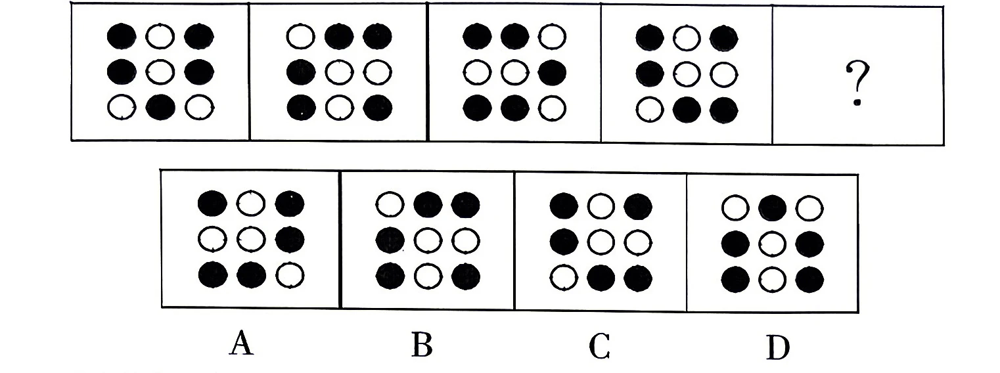
从所给的四个选项中，选择最合适的一个填入问号处，使之呈现一定的规律性：
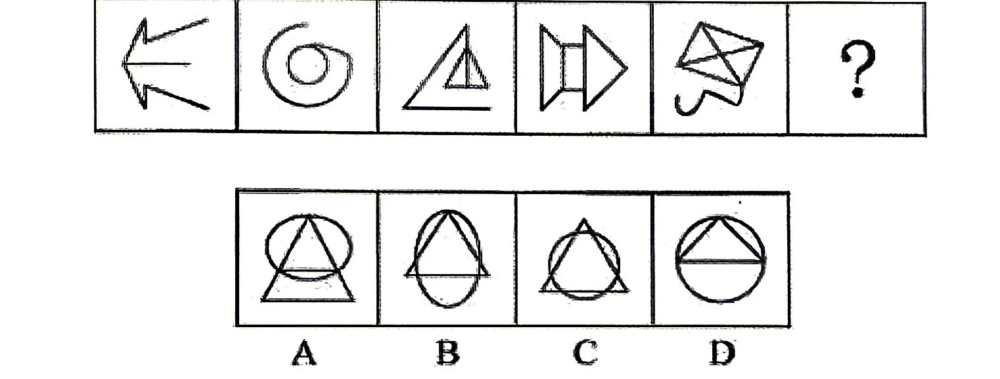
请从四个选项中选出最恰当的一项填在问号处，使图形呈现一定的规律性。M________________
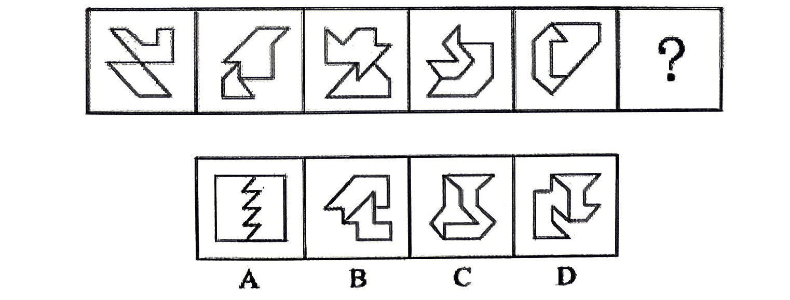
从所给的四个选项中，选出最合适的一个填入问号处，使之呈现一定的规律性。
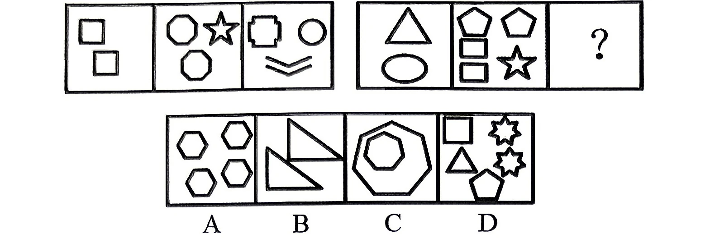
从所给的四个选项中，选出最合适的一个填入问号处，使之呈现一定的规律性。晶早星虹 贡 左 火之 右山路豆 ? A B C D
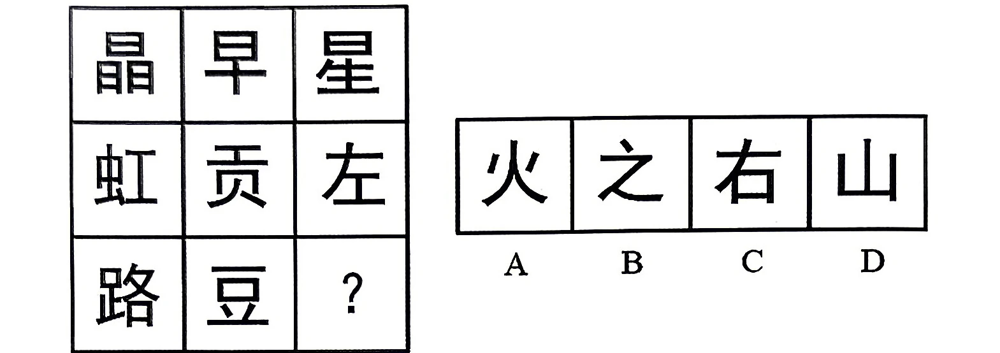
把下面六个图形分为两类，使每一类图形都有各自的共同特征或规律，分类正确的一项是：
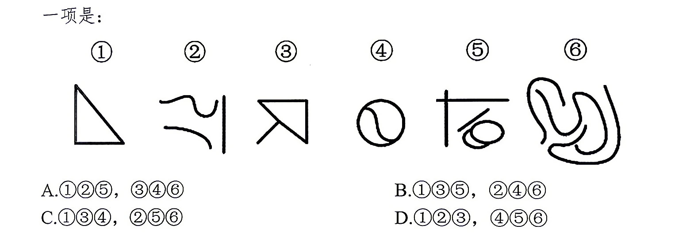
A.①②⑤，③④⑥ B.①③⑤，②④⑥ C.①③④，②⑤⑥ D.①②③，④⑤⑥
把下面的六个图形分为两类，使每一类都有各自的共同特征或规律，分类正确的一项是：
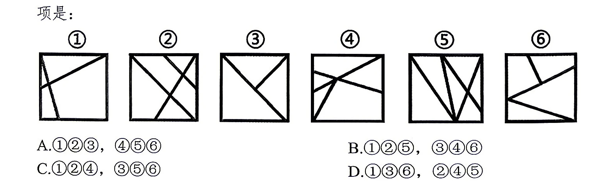
A.①②③，④⑤⑥ B.①②⑤，③④⑥ C.①②④，③⑤⑥ D.①③⑥，②④⑤
把下面六个图形分为两类，使每一类图形都有各自的共同特征或规律，分类正确的一项是：
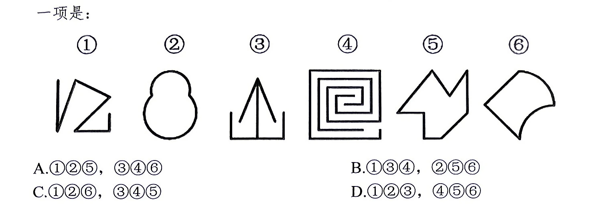
A.①②⑤，③④⑥ B.①③④，②⑤⑥ C.①②⑥，③④⑤ D.①②③，④⑤⑥
左边给定的是正方体的外表面展开图，下面哪一项能由它折叠而成？
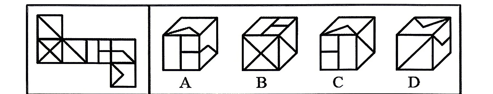
左图给定的是由相同正方体堆叠而成的多面体的正视图和后视图，该多面体可以由
①、②和③三个多面体组合而成，问以下哪一项能填入问号处？
中选出一个最符合或最不符合定义的答案。注意：假设这个定义是正确的，不容置疑的。
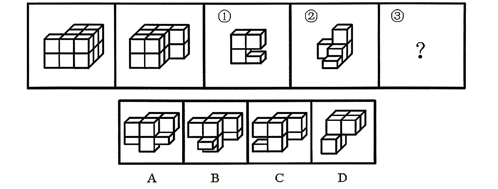
思维定势又称“习惯性思维”，是指人们按习惯的、比较固定的思路去考虑问题、分析问题，表现为在解决问题过程中做特定方式的加工准备。它阻碍了思维的开放性和灵活性，造成思维的僵化和呆板。这使得人们不能灵活运用知识，创造性思维的发展受到阻碍。根据上述定义，下列选项体现了思维定势的一项是：
A.盲人摸象 B.买椟还珠 C.削足适履 D.亡羊补牢
数字家庭是指以计算机技术和网络技术为基础，各种电器通过不同的互连方式进行通信及数据交换，实现电器间的互联互通，使人们可以更加方便快捷地获取信息，从而极大提高人类居住的舒适性和娱乐性。根据上述定义，下列不涉及数字家庭的是：
A.小王通过网络控制家里的打印机，实现远程打印
B.小李通过蓝牙将投影仪与笔记本电脑连接，在家里播放电影
C.小刘使用电饭煲预约定时功能，让电饭煲在预定时间自动开始工作
D.小张在单位上班时，通过手机控制家里的电视，录制正在直播的体育节目
信息扶贫：指政府或社会群体借助信息技术手段来解决因信息闭塞而导致的经济、文化上的贫困问题。下列属于信息扶贫的是：
A.某物流公司联手互联网巨头在边远山区定向从贫困户中招聘一批快递员，经过专业培训之后上岗，帮他们走上了脱贫致富的道路
B.某手机生产厂家面向农村市场，推出了一款低成本、易操作、大屏幕、待机时间长的时尚智能手机，村民们纷纷换掉了原来的旧手机
C.省城某重点中学建立网络课堂，向某贫困县的中学进行远程同步直播，使两地师生共享优质教学资源。几年来，该县考上重点大学的人数明显增长
D.毕业返乡的小周带着几个同学开了家网店，在网上销售自家种植的红枣，销量逐步上升，日子越来越红火
时间感知扭曲是指对时间不正确的知觉。在生活中，受各种因素影响，人们对时间的感知往往会不符合实际，有时候觉得时间过长，有时候觉得时间太短。许多原因都可以造成时间感知扭曲，现实中一场糟糕的表演会让人如坐针毡、觉得终场遥遥无期，与此相反的是，人们对于美好愉悦的时光总嫌太短。根据上述定义，下列选项不符合时间感知扭曲的是：
A.一日不见，如三月兮 B.欢娱嫌夜短，寂寞恨更长 C.孤馆度日如年，风露渐变 D.入春才七日，离家已二年
职业锚指当一个人不得不做出选择时，无论如何都不会放弃的职业中的那种至关重要的东西或价值观。技术职能型职业锚是指个体的整个职业发展，都围绕着他所擅长的一套特别的技术能力或特定的职业工作而发展。根据上述定义，以下哪项符合技术职能型职业锚？
A.小李获得计算机专业硕士学位后就职于一家游戏软件公司，做了一名软件工程师，因经常加班身体透支严重，索性辞职开了一家花店
B.王大夫是一名神经外科专家，因其专业技能精湛，在业内享有较高声誉，被推选为院长，全职负责全院的行政管理工作
C.小丽是一名专职演员，在多部电影中都有不错表现，但随着年龄增长遭遇事业瓶颈，遂决定息影，赴国外学习工商管理
D.小张在厨师学校毕业之后，先是受雇于一家小型餐厅，开始时不受重用，后来潜心钻研新菜品大获赞誉，被猎头挖至五星级酒店，担任餐厅主厨
航空航天材料按使用范围可分为结构材料与功能材料。结构材料主要用于制造飞行器各种结构部件，其作用主要是承受各种载荷；功能材料主要是指在光、声、电、磁、热等方面具有特殊功能的材料。根据上述定义，下列属于结构材料的是：
A.传感器件材料 B.发动机壳材料 C.热防护材料 D.吸波材料
心理人类学是介于文化人类学与心理学之间的交叉学科，主要研究并了解文化对所属社会成员产生影响的心理机制，发现在个体水平上的心理变量与在总体水平上的文化、社会、经济、生态和生物变量之间的关系。根据上述定义，下列选项属于心理人类学研究范畴的是：
A.“五四”前后诗歌风格的比较 B.当代流行话语下的社会主流价值 C.草原文明与蒙古民族性格的养成 D.从《背影》看作者对父亲态度的变化
暂予监外执行是指对被判处有期徒刑、拘役或无期徒刑的罪犯，在某些法定情形出现时，暂时不采取在监狱或看守所执行原判刑罚的一种变通执行方法。罪犯有下列情形之一的，可以暂予监外执行：（1）有严重疾病需要保外就医的；（2）怀孕或正在哺乳自己的婴儿的；（3）生活不能自理，适用暂予监外执行不致危害社会的。被判处无期徒刑的罪犯，只有在符合第二种情形时，才可以暂予监外执行。对适用保外就医可能有社会危险性的罪犯，或者自伤自残的罪犯，不得保外就医。根据上述定义，下列罪犯最有可能适用暂予监外执行的是：
A.罪犯甲（女）被判处有期徒刑，丈夫死亡，父母患重病，尚有三个3～8岁的未成年子女无人照看
B.罪犯乙被判处有期徒刑，入监后对生活失去信心，自杀未果，危及生命
C.罪犯丙被判处有期徒刑，服刑期间突发疾病，肢体瘫痪，生活不能自理
D.罪犯丙（女）被判处死刑，判决生效后发现其已怀孕三个月
虚假记忆综合征是指一个人的认同和人际关系以一种创伤经历的记忆为中心，这种记忆在客观上是虚假的，但病人却对此深信不疑，它在病人内心是非常逼真的，几乎就是一种“客观现实”。根据上述定义，下列属于虚假记忆综合征的是：
A.甲在被蛇咬过后，看见所有像蛇一样的东西，都会感到恐惧
B.乙参加婚礼不由自主回忆起自己结婚时的情境并感到幸福
C.丙看到路边可怜的乞丐会勾起痛苦的回忆而产生怜悯之心
D.丁通过反复洗手来排除内心强烈的肮脏感获得心灵的平静
习俗冲击是指生活在某一种习俗中的人初次接触到另一种习俗时所产生的不适感和压力感。根据上述定义，下列属于习俗冲击的是：
A.江西女孩小莉考上湖南大学，入学后感觉生活与学习一团糟
B.江南女子小苏第一次去北方某省公婆家过年，对当地下跪磕头的拜年方式难以接受
C.杨教授去英国做访问学者，但为自己的“哑巴英语”带来的沟通障碍感到焦虑
D.小高参加“变形记”到一城市富裕家庭短暂生活，被“新家”的奢华震惊了一组与之在逻辑关系上最为贴近、相似或匹配的词。
处之泰然：镇定
A.大义凛然：壮烈 B.虚怀若谷：谦虚 C.杳如黄鹤：消失 D.似水流年：时间
涠洲岛：火山岛
A.樟子松：常绿树 B.趵突泉：蝴蝶泉 C.珊瑚海：边缘海 D.白种人：欧洲人
买票：检票：进站
A.琢磨：抛光：上蜡 B.鸣枪：起跑：冲刺 C.上膛：瞄准：射击 D.发卷：答题：评分
飞行员：战斗机：天空
A.足球裁判：哨子：球场 B.司机：方向盘：马路 C.学生：试卷：考场 D.消防员：云梯：洒水车
扇子 对于（）相当于（）对于手表
A.团扇；钟表
B.蒲扇；怀表
C.引风；计时
D.扇面；表盘置疑的，要求你根据这段陈述，选择一个答案。注意：正确的答案应与所给的陈述相符合，不需要任何附加说明即可从陈述中直接推出。
科学家提出，日照时间过短可能会导致人产生抑郁症。在一项研究中，科学家把10只小鼠移至黑暗的环境中生活了4周。4周后，它们身体的免疫表达发生了改变，大脑中的海马细胞（负责认知和记忆能力，是成年后大脑神经元唯一还会继续增殖的区域）的增殖也减少了，小鼠因此变得抑郁。以下哪项如果为真，最能削弱上述观点？
A.住在高纬度地区的人因日照时间短更容易得抑郁症
B.一些并非生活在黑暗环境中的小鼠也存在抑郁症状
C.睡眠时间的严重缺乏是导致抑郁症发生的重要因素
D.海马细胞的增殖可能会受到陌生环境的影响而减少
人间万事出艰辛。人世间的美好梦想，只有通过诚实劳动才能实现；发展中的各种难题，只有通过诚实劳动才能破解；生命里的一切辉煌，只有通过诚实劳动才能铸就。诚实劳动，是人生出彩的前提条件，也是创造美好生活的必经之路。下列除哪项外，均可以由上述题干推出？
A.要想人生出彩，就得诚实劳动
B.除非诚实劳动，否则不能铸就生命里的一切辉煌
C.不诚实劳动，就不能破解发展中的各种难题
D.大力践行诚实劳动就可以创造美好生活
婴幼儿发烧是一件让家长发愁的事情，由于婴幼儿身体娇嫩，身体的各项免疫系统能力低下，因此发烧是“家常便饭”。有一些家长喜欢用酒精给孩子擦浴以达到退烧目的。但儿科医生指出，这种物理降温的方式并不适合婴幼儿。以下哪项如果为真，最能支持上述结论？
A.婴幼儿发烧后全身毛细血管处于扩张状态，对酒精的耐受性低，易吸收乙醇而引起酒精中毒
B.发烧状态下，用酒精擦浴遇寒冷刺激后，毛细血管压力增加，导致肺循环阻力增大，易导致肺出血
C.医生建议，若孩子体温持续超过38.5℃，且出现不适反应，可口服布洛芬或对乙酰氨基酚等药物退热
D.用37℃左右的温热毛巾对婴儿额头、颈部及腹股沟进行擦浴，可以有效缓解婴幼儿的发热症状
宇航员太空旅行面临的主要健康问题之一是辐射暴露。研究人员发现，水熊虫生命力强，能在零下20摄氏度沉睡30年后成功苏醒，在150摄氏度高温下镇定自若，在6倍于深海压力的环境下也能存活，耐得了太空的真空环境、扛得住射线侵袭。有科学家指出，将水熊虫的DNA与人类细胞相结合，可以帮助宇航员长时间抵御太空辐射的侵袭。以下哪项如果为真，最能质疑上述结论？
A.金属壳体和强磁场屏蔽技术才是宇航员抵御长期太空辐射的最有效手段
B.水熊虫体内存在一些与环境应激有关的基因，这有助于它们适应各种恶劣环境
C.水熊虫能够扛得住射线侵袭，关键是因其体型小，人的体型相对较大，不同大小的物体在真空下抗射线侵袭的能力截然不同
D.水熊虫DNA与人类细胞相结合涉及伦理问题
除非出现车辆故障且该故障会影响正常行驶，否则不能在高速上停车。小王的车出现了故障，所以他可以在高速上停车。以下哪项所犯的逻辑错误与题干最相似？
A.如果自来水达标，那么它是无色透明的，同时没有任何异味。某市的自来水无色透明，所以该市的自来水是达标的
B.只有具备防火、防盗双重功能的才能被称之为合格的防盗门。某品牌防盗门具备防火功能，所以它是合格的防盗门
C.猪肉价格稳定是居民消费价格指数、恩格斯系数保持平稳的基础。我国当前的恩格斯系数平稳，所以猪肉价格平稳
D.只有具备强大科研实力的国家，才能发射月球探测器并带回土壤。H国未发射月球探测器，所以该国科研实力不强
中国戏曲与希腊悲剧和喜剧、印度梵剧并称为世界三大古老的戏剧文化，经过长期的发展演变，逐步形成了以“京剧、越剧、黄梅戏、评剧、豫剧”五大戏曲剧种为核心的中华戏曲百花苑。退休在家的张爷爷想利用五天时间去感受一下不同的戏曲剧种。周一到周五，一天只欣赏一种剧种。已知：（1）除非周一听越剧，否则周三听豫剧。(2）只有周二听京剧，周五才听评剧或黄梅戏。（3）如果周二听越剧，那么周一听京剧或者黄梅戏。如果周二听越剧，那么以下哪个选项一定正确？
A.周一听豫剧 B.周三听京剧 C.周四听评剧 D.周五听黄梅戏
研究人员邀请17位孩子进行了一项实验，他们给孩子们分配了合适的故事阅读任务。在实验过程中，每个孩子都会面临两种阅读环境—屋内有狗、屋内没有狗。实验结果显示，当狗在房间里的时候，孩子们阅读的时间明显比没有狗的时候多，阅读时坚持读下去的毅力更强。因此，狗的陪伴能明显提升孩子阅读时的积极性和毅力。以下哪项如果为真，最能支持上述观点？
A.房间里如果有只狗慵懒地趴着，整个氛围就会显得轻松、舒适，而放松的环境会带来事半功倍的阅读效果
B.狗永远是一位忠诚的听众，并不在乎孩子有没有读错，这有助于孩子培养阅读时的自信，发现阅读的乐趣
C.研究人员没有让孩子自己选择想要阅读的内容，而是给孩子仔细挑选并分配具有挑战性的阅读任务
D.实验中使用的伴读犬的品种一样，大小、年龄相似，但没有控制或限制孩子与狗之间的交流和接触
6500万年前白垩纪大灭绝事件中鸟类得以幸存，研究人员通过对非鸟类恐龙以及古鸟类牙齿的微结构进行对比观察和研究，发现古鸟类的牙釉质与牙本质之间的多孔罩牙本质层皆已消失。而多孔罩牙本质层是肉食性恐龙牙齿中发育的、避免其在掠食过程中牙齿断裂的特殊避震保护结构。科学家由此推测，鸟类的饮食习惯与肉食性恐龙发生了极大差异，其牙齿不再需要特殊的力学保护结构，因此避开了与肉食性恐龙对食物生态位的竞争、度过了最艰难的时刻。以下哪项如果为真，最不能削弱上述结论？
A.古鸟类罩牙本质层的消失是在应对此次大灭绝事件的过程中退化的
B.非鸟类恐龙的罩牙本质层是在应对此次大灭绝事件的过程中产生的
C.小盗龙标本的罩牙本质层也已经消失，但小盗龙却没能在大灭绝中存活
D.非鸟类恐龙的少数类群发生了植食或杂食化演化，仍难避免灭绝的厄运
在大自然中，狼群捕食猎物使得不同的生物种群之间存在复杂的相互作用，有利于维护生态平衡。微生物学家发现，在微生物群落中，有一种粘细菌能够“捕食”活的微生物细胞或者其他生物大分子获取营养，同时还能够根据外界环境的营养阈值进行自我调整来适应外界环境。该团队据此认为，粘细菌处于土壤微生物食物链的顶端，它们有利于维护微生物生态系统的平衡。以下哪项如果为真，最能支持上述结论？
A.捕食性微生物-植物-土壤微生物互作关系很重要
B.富含粘细菌的土壤中捕食性微生物的丰度更高
C.粘细菌具有多细胞群体行为特征，是高等原核生物
D.粘细菌的捕食行为驱动土壤微生物群落结构稳定
研究团队分析了自闭症患者与普通人群之间外在表现方面，如情感识别、活动规划等7个存在差异的方面的“效应量”变化。“效应量”是一种统计学指标，可以反映两组对象在某项特征上的差异大小。结果发现，这7个方面的“效应量”有5个在过去50年中下降幅度均超过45%。研究人员认为，这意味着自闭症患者和普通人群正变得“越来越相似”，自闭症诊断的边界可能会因为“过于模糊”而失去意义。以下哪项如果为真，最能削弱上述论证？
A.作为判断自闭症患者最重要两个方面的“效应量”下降幅度可忽略不计
B.智力水平可通过临床实验测算，自闭症患者智力水平低于同龄的普通人
C.调查发现两类对象间存在差异的“效应量”下降幅度在近十年不断减小
D.该研究团队分析的普通人中实际上也有部分人是具有轻微自闭症的患者
2023 年全国粮食播种面积 118969 千公顷，比 2022 年增加 636 千公顷。2022 年粮食播种面积比 2021 年增长 0.6%。
按季节分，全国早稻播种面积为 4733.1 千公顷，同比下降 0.5%，夏粮播种面积为 26608.6 千公顷，同比增长 0.3%，秋粮播种面积为 87626.8 千公顷，同比增长 0.7%。
按品种分，全国谷物播种面积 99926.4 千公顷，同比增长 0.7%，豆类和薯类的播种面积分别为 11994.2 和 7048 千公顷，同比增长 1.0%和-1.9%。谷物中：稻谷，小麦以及玉米的播种面积分别为 28949.1，23627.2 和 44218.9 千公顷，同比分别增长-1.7%，0.5%和 2.7%。
2023 年全国粮食总产量 69541 万吨，比 2022 年增加 888 万吨，增长 1.3%。2022 年粮食总产量比 2021 年增长 0.5%。
按季节分，全国早稻总产量为 2833.7 万吨，同比增长 0.8%，夏粮总产量为 14615.2 万吨，同比下降 0.8%，秋粮总产量为 52092 万吨，同比增长 0.7%。
按品种分，全国谷物总产量 64143 万吨，同比增长 1.3%，豆类和薯类的总产量分别为 2384.1 和 3013.9 万吨，同比增长 1.4%和 1.2%。谷物中：稻谷，小麦以及玉米的总产量分别为 20660.3，13659 和 28884.2 万吨，同比分别增长-0.9%，-0.8%和 4.2%。
注谷物主要包括稻谷、小麦、玉米、大麦、高梁、荞麦和燕麦等。
2022 年全国粮食播种面积比 2021年约增长（ ）千公顷。
A.636 B.706 C.932 D.1342
2022年，全国秋粮总产量约比夏粮多（）亿斤。
A.34376.8 B.36996.7 C.7491.3 D.7399.4
2023年，我国单位面积产量最高的粮食品种是（）。
A.稻谷 B.玉米 C.小麦 D.薯类
2023年，全国早稻产量对全国粮食总产量的增长贡献率约为多少？（）
A.40.8% B.25.2% C.4.08% D.2.52%
结合材料，以下说法正确的是（）。
A.2023年，全国粮食总产量的同比增长量低于2022年的同比增长量
B.2023年，全国小麦和玉米的总播种面积较上年增长不到1.6%
C.2023 年，除稻谷、小麦和玉米以外的其他谷物的产量占当年全国谷物总产量的比重不到5%
D.2023 年，全国秋粮的单位面积产量为5944.8斤/亩
2022 年，江苏省共投入 R&D 经费 3835.4 亿元，增长 11.5%；R&D 经费投入强度（与全省地区生产总值之比）为 3.12%，比上年提高 0.19 个百分点。按 R&D 人员全时工作量计算的人均经费为 46.5 万元，比上年增加 1.0 万元。
按活动类型分，全省基础研究经费 158.8 亿元，比上年增长 17.0%；应用研究经费 196.4 亿元，增长 9.5%；试验发展经费 3480.2 亿元，增长 11.4%。
按活动主体分，企业 R&D 经费支出 3359.3 亿元，增长 11.3%；政府属研究机构经费支出 240.8 亿元，增长 17.0%；高等院校经费支出 202.5 亿元，增长 13.0%。
按资金来源分，政府资金投入 286.0 亿元，比上年增加 8.7%；企业资金投入 3411.6 亿元，增长 11.3%；境外及其他资金投入 137.8 亿元，增长 25.1%。
表 2021-2022 年江苏省 13 个市区 R&D 经费情况（数值据原表逐格核对）
| 地区 | R&D 经费（亿元） 2021 年 | R&D 经费（亿元） 2022 年 | R&D 经费占该地区生产总值比重（%） 2021 年 | 比重（%） 2022 年 |
|---|---|---|---|---|
| 南京 | 578.8 | 645.3 | 3.54 | 3.82 |
| 无锡 | 445 | 487.5 | 3.18 | 3.28 |
| 徐州 | 146.2 | 169.5 | 1.8 | 2 |
| 常州 | 290.4 | 323.2 | 3.3 | 3.38 |
| 苏州 | 888.7 | 961.4 | 3.91 | 4.01 |
| 南通 | 286.2 | 312.1 | 2.6 | 2.74 |
| 连云港 | 88.2 | 104.2 | 2.37 | 2.6 |
| 淮安 | 81 | 94.8 | 1.78 | 2 |
| 盐城 | 140.3 | 164.6 | 2.12 | 2.32 |
| 扬州 | 151.6 | 176 | 2.26 | 2.48 |
| 镇江 | 113.8 | 130.9 | 2.39 | 2.61 |
| 泰州 | 159.8 | 181.3 | 2.65 | 2.83 |
| 宿迁 | 68.5 | 81.4 | 1.84 | 1.98 |
2021年，江苏省共投入R&D 经费为（）亿元。
A.3065.2 B.3206.5 C.3439.8 D.3618.2
2022 年，江苏省13个市区中，R&D 经费的同比增长率不到 10%的有（）个市区。
A.3 B.4 C.9 D.10
2021年，江苏省应用研究经费占全省 R&D 经费总投入的比重为（）
A.不到 3% B.3%~6%之间 C.6%~9%之间 D.超过 9%
2022 年，江苏省 13 个市区中，R&D 经费的同比增长率超过该市地区生产总值的同比增长率的有（）个市。
A.10 B.11 C.12 D.13
根据材料，以下说法不正确的是（）
A.2022 年，江苏省按 R&D人员全时工作量计算的人均经费比上年增加约 2.2%
B.2021年，南通市地区生产总值小于常州市的地区生产总值
C.2022 年，高等院校经费支出占江苏省 R&D 经费的比重同比增长不到2个百分点
D.2021 年，江苏省 R&D 经费投入强度为 2.93%
2023 年，全国货物进出口总额 41.76 万亿元，其中，出口 23.77 万亿元，进口 17.98 万亿元。对共建“一带一路”国家进出口额 19.47 万亿元。
图 2015-2022 年货物进、出口额（保留卷面原图）
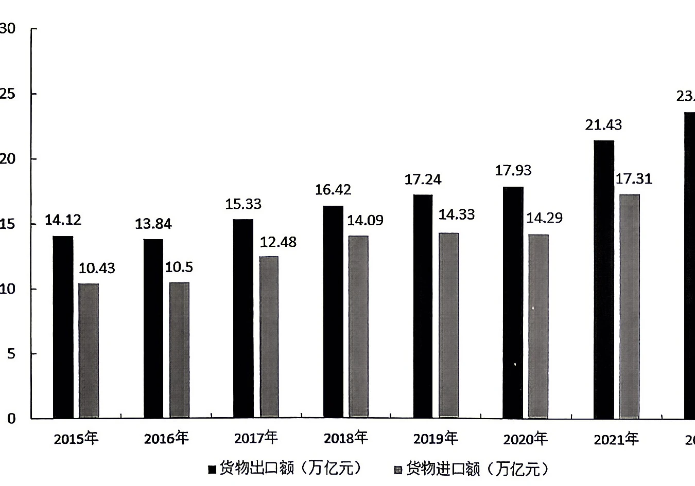
表 2023 年货物进出口总额及其增长速度（数值据原表逐格核对）
| 指标 | 金额（亿元） | 比上年增长（%） |
|---|---|---|
| 货物进出口总额 | 417568 | 0.2 |
| 货物出口额 | 237726 | 0.6 |
| 其中：一般贸易 | 153530 | 2.5 |
| 加工贸易 | 49062 | -9.0 |
| 其中：机电产品 | 139196 | 2.9 |
| 高新技术产品 | 59279 | -5.8 |
| 货物进口额 | 179842 | -0.3 |
| 其中：一般贸易 | 117042 | 1.3 |
| 加工贸易 | 27061 | -11.3 |
| 其中：机电产品 | 65363 | -5.5 |
| 高新技术产品 | 47916 | -5.2 |
在各项金额保持2023 年同比增量不变的情况下，若2028年我国对共建“一带一路”国家进出口额占全国货物进出口总额的比重突破50%，则2023年我国对共建“一带一路”国家进出口额的同比增长量约至少突破（）亿元。
A.2890 B.3270 C.3520 D.3940
十三五期间（2016-2020年），全国货物进出口总额平均每年约增长（）万亿元。
A.34.19 B.29.28 C.1.97 D.1.53
2022年，全国机电产品出口额与高新技术产品出口额相差（）倍。
A.3.15 B.2.15 C.1.15 D.0.13
2023年，全国货物进出口顺差较上年增长（）。
A.-1.2% B.0.3% C.1.5% D.3.6%
以下柱状图反映了哪一时间段内，哪一数据同比增量的变化情况（横轴位置代表0）？( )
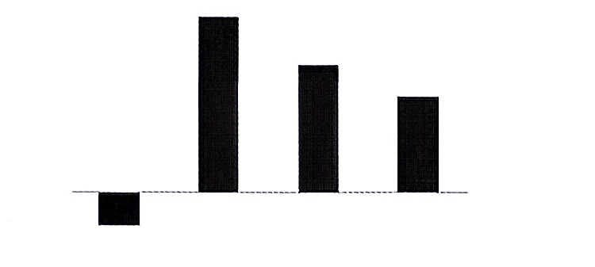
A.2016-2019年全国货物出口 B.2020-2023 年全国货物出口 C.2016-2019年全国货物进口 D.2020-2023年全国货物进口
图 1 全国规模以上工业原油量月度走势（保留卷面原图）
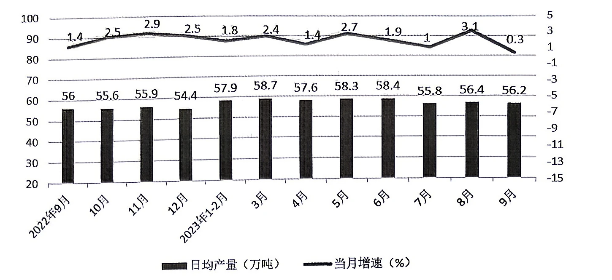
图 2 全国原油进口月度走势（保留卷面原图）
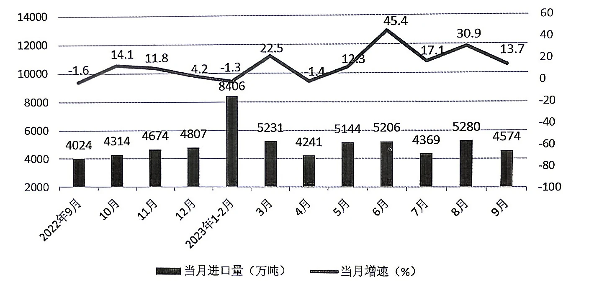
图 3 全国规模以上工业原油加工量月度走势（保留卷面原图）
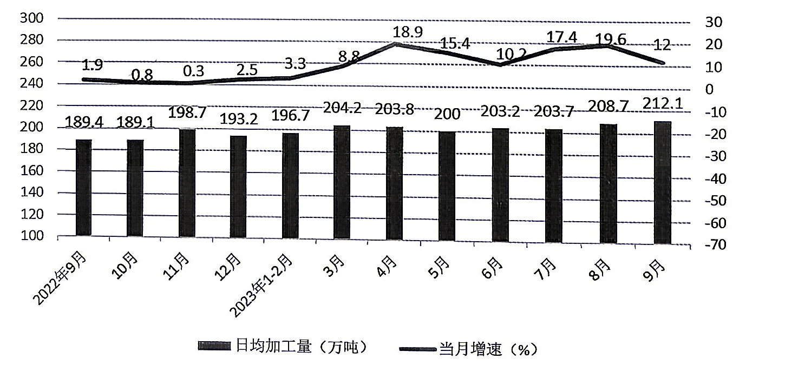
注图中当月增速均为同比增速
2023年6月，全国规模以上工业原油产量环比增速约为（）。
A.-4.5% B.-3.1% C.3.1% D.4.5%
下列季度中，全国原油进口量最低的月份在哪个季度？（）
A.2022 年第四季度 B.2023 年第一季度 C.2023 年第二季度 D.2023 年第三季度
如2024 年各月全国原油进口量同比增速与2023年相应月份相同，则2024年第三季度全国原油进口量将在以下哪个范围内？（）
A.不到 1.4 亿吨 B.1.4-1.6 亿吨之间 C.1.6-1.9 亿吨之间 D.2 亿吨以上
2023年8月，全国规模以上工业原油加工量相比上年同期增长了（）万吨。
A.23 B.34 C.789 D.1060
不能从上述资料中推出的是（）。
A.2023 年 9 月全国规模以上工业原油产量比 2021 年同期增长超过 1.7%
B.2023年6-9月，全国规模以上工业原油加工量环比下降的月份有2个
C.2023年7-9月，全国原油进口量的环比变化量逐月递增
D.2023 年 8 月全国原油进口量大约是 2022 年同期的 1.3倍